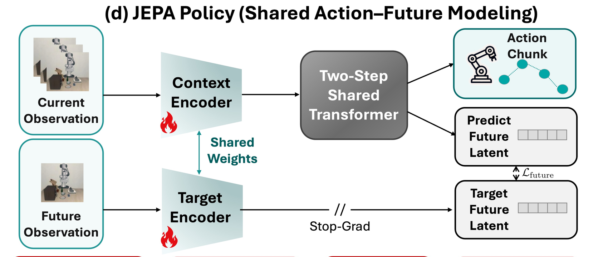
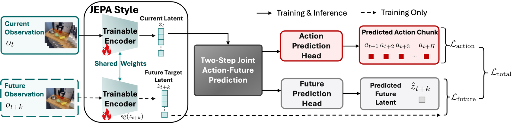
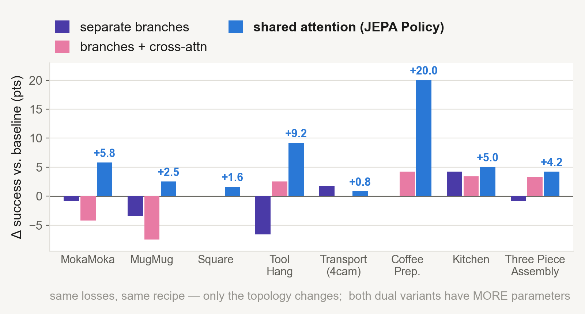
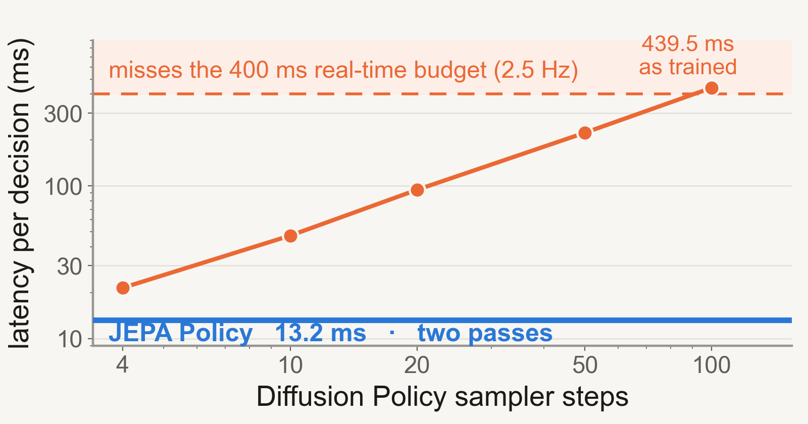
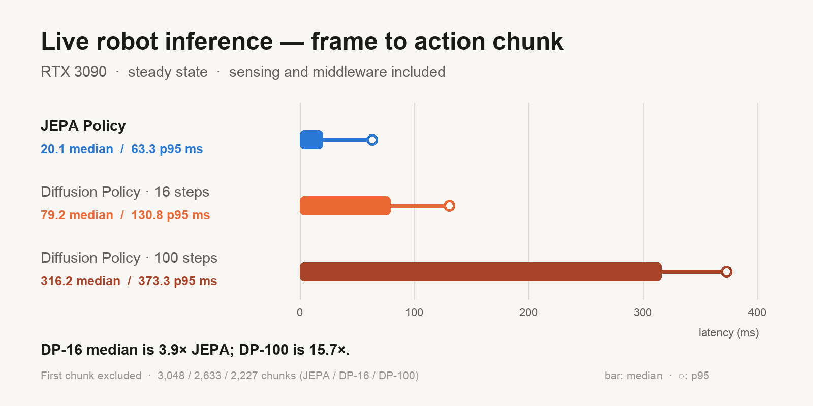
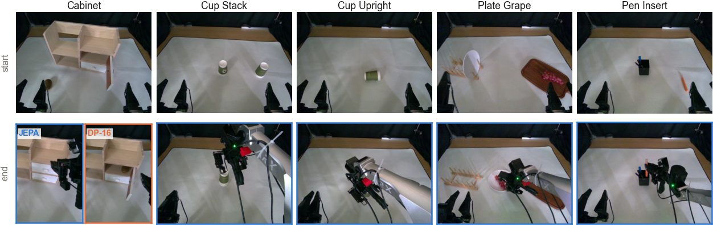
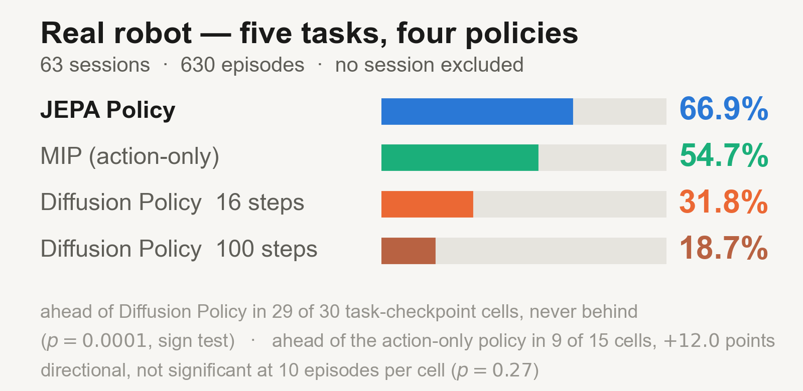

Paired supervision
The training targets pair an expert action chunk with a future observation from the same demonstration. The policy predicts that observation's representation, not its pixels.
JEPA Policy learns to predict robot actions together with a representation of a future observation. Both predictions share one Transformer, trained from scratch on paired demonstrations and evaluated in two forward passes.

A demonstration provides both an action and what happened next. We use that pairing as additional supervision for a diffusion-free policy. Predicting a future representation, rather than a video, keeps the learning problem focused on control.
Method
We extend action-only MIP with a future-representation target. The main design choice is where the two predictions interact.
The training targets pair an expert action chunk with a future observation from the same demonstration. The policy predicts that observation's representation, not its pixels.
Action and future tokens attend to each other in every Transformer layer. Both objectives train the same stack, with the visual encoder learned from scratch.
The first pass predicts actions and future representations; the second refines them. We build on MIP, without diffusion training or iterative denoising at deployment.

Action and future tokens share every self-attention layer. The future target uses the live shared encoder with stop-gradient.
Video · 1 min 45 sec
A short overview of the method, Coffee Preparation and Tool Hang comparisons, inference latency, and all five real-robot tasks. Full evaluation results are in the paper.
Ablation studies
We compare shared and separate prediction branches under matched training settings, then change gradient routing to test how future supervision reaches the action predictor.

The matched dual-branch and gradient-routing controls support using future supervision within the action-generating stack, rather than in a separate prediction branch.
Across 84 checkpoints, we observe no complete collapse under action supervision. Some tasks still show low-rank representations; the paper reports these exceptions.
Future-prediction error can help rank failures on some tasks, but performance varies by task. It is not a calibrated or universal failure probability.
Inference latency
We measure model-only decision time on the PPU benchmark and frame-to-action-chunk latency on the RTX 3090 deployment stack. These are separate measurements, not interchangeable speedup claims.


Real-robot experiments
Each task uses 100 demonstrations. We evaluate three checkpoints per policy over 63 sessions, covering Cabinet, Cup Stack, Cup Upright, Plate Grape, and Pen Insert.
Policies run synchronously. Success means finishing within the same task-specific action-chunk budget, not a wall-clock deadline. The released code includes the deployment stack, task launchers, safety checks, and evaluation tools.


JEPA Policy improves on action-only MIP and Diffusion Policy across the nine simulated tasks tested. Tool Hang contributes substantially to the average margin over Diffusion Policy.
The real-robot results come from one platform and one operator, with ten episodes per checkpoint session. They suggest an advantage over action-only MIP, but do not establish generalization to other robots or settings.
JEPA Policy
The paper describes the method and evaluation protocol. The repository contains training configurations, baseline recipes, and real-robot deployment code.